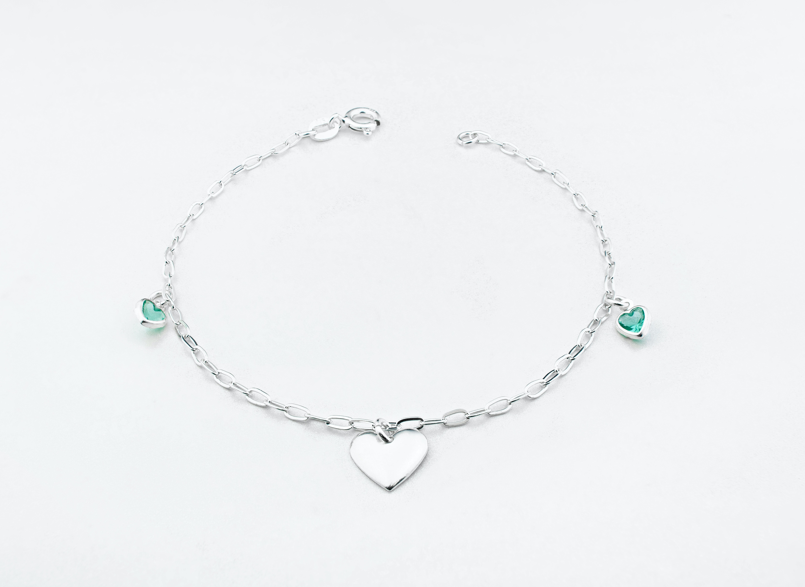

Pulseiras
As pulseiras, além de serem adornos deslumbrantes, têm o poder de contar histórias e refletir a personalidade de quem as usa. Nossa coleção de pulseiras de prata combina artesanato requintado com designs modernos para oferecer a você uma seleção diversificada que complementará seu estilo de forma única.
- Pulseira de Contas Trançadas
- Pulseira Bangle Elegante
- Pulseira de Prata
As pulseiras de contas trançadas são um exemplo encantador de artesanato e criatividade. Com uma combinação de materiais, como prata e pedras, essas pulseiras oferecem uma estética artística e boêmia. São perfeitas para adicionar um toque de cor e textura ao seu pulso.

As pulseiras bangle são conhecidas por seu design simples e elegante, geralmente feitas de uma única peça de prata. Essas pulseiras deslizam elegantemente no pulso, adicionando um toque de classe a qualquer look. Elas podem ser usadas individualmente ou empilhadas para um visual mais ousado.
A fusão de prata com couro oferece uma abordagem única ao design de pulseiras. Essas pulseiras combinam a elegância da prata com a textura rústica do couro, criando um contraste visual interessante. São ótimas para adicionar um toque de estilo masculino ou boho ao seu conjunto..